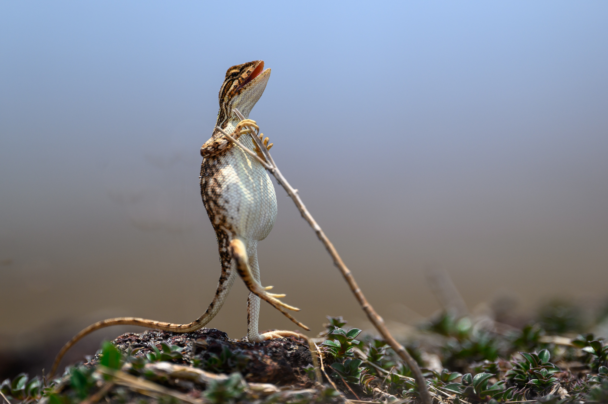

Highly Commended
Highly commendedNikon Comedy Wildlife Awards 2024
Honors from more than 35 years behind the camera, at international and national level: Sony World Photography Awards, National Geographic, Lonely Planet, the Nikon Comedy Wildlife Awards and more, alongside features in international magazines.

Most recent honor
Nikon Comedy Wildlife Awards, 2024.
Competition results and editorial features from 2010 to today. Filter by the kind of recognition.
Nikon Comedy Wildlife Awards 2024
Smart Photography magazine, April 2023 issue
India’s leading photography magazine
International Portrait Photographer of the Year 2021
Kinfolk, international lifestyle magazine
Sony All India Corporate Photography Contest
Sony All India Corporate Photography Contest
Photo contest by Navi Mumbai Municipal Corporation, 2017–18
Corporate photography contest
Photo contest by Navi Mumbai Municipal Corporation
Photo contest by Navi Mumbai Municipal Corporation
National Geographic, in association with Uttar Pradesh Tourism
121 Clicks
3rd International Filter Photo Contest 2012–13
Sponsored by Kenko-Tokina Co. Ltd.
Tamron Challenge
Certificate of Recognition
Photothon 2013, organised by Maharashtra Nature Park
A Magazine International Photo Contest by AkzoNobel, Netherlands
Category: Color in the Urban World
A Magazine by AkzoNobel
Sony World Photography Awards
Red Frames, India
Theme: Frames of My City
The Lonely Planet 100 Million Travel Photography Competition, by Lonely Planet
“1000 for 1” International Photographic Competition
No honors in this category yet.
Magazines and publications that have carried the work.
Featured artist, in the same year he was named Worldwide Winner of the magazine’s international photo contest.
Selected among the top photographs of the Holi festival.
A photograph featured in the leading international lifestyle magazine.
An article on archival printing, written for India’s leading photography magazine.
Sanjay Patil is a distinguished and multi-talented individual with a unique blend of technical expertise and creative passion. With a background in engineering, he spent several years in the corporate petroleum sector, honing his skills in building projects, technical analysis and innovative thinking. His true passion, though, lies in photography, a field he has dedicated himself to for over 35 years.
Sanjay is not only an award-winning photographer but also a passionate teacher, mentoring students and sharing his knowledge of the art. He specializes in fine art archival printing, offering expert guidance on producing high-quality prints that preserve the essence of the artwork.
An avid trekker, he finds inspiration in nature’s most rugged landscapes, and that love shapes his landscape and outdoor work. His journey as a photographer, mentor and adventurer continues to inspire hundreds of fellow photographers.
Mentoring and workshops for photographers, expert fine art archival printing, and photography projects. Get in touch to talk about yours.
Email Sanjay